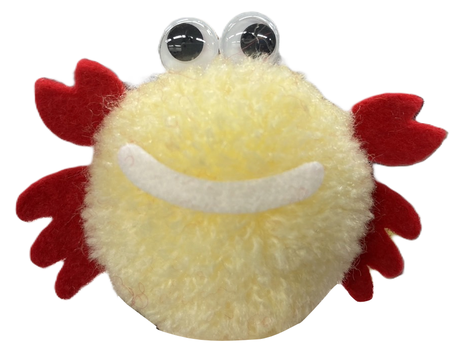

2D 横スクロールアクション
カニジャンプ DX
手芸ポンポンのカニ1号が横断歩道を駆け抜ける爽快アクション！ 2段ジャンプ・急降下・信号機ラッシュ・カニ無双 FEVER で車を吹き飛ばそう。
2D DX をあそぶ！あそびたいバージョンを選んでね！

手芸ポンポンのカニ1号が横断歩道を駆け抜ける爽快アクション！ 2段ジャンプ・急降下・信号機ラッシュ・カニ無双 FEVER で車を吹き飛ばそう。
2D DX をあそぶ！
Three.js 製のふわふわ 3D カニ1号を操作！ 奥から迫る乗用車をジャンプで飛び越え、背の高いトラックを横歩きでかわそう。
3D 版をあそぶ！